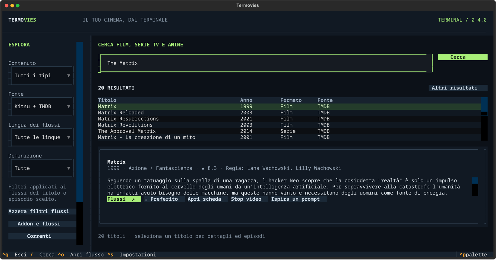

TMDB + Kitsu
Ricerca in italiano per film e serie con TMDB, catalogo anime Kitsu integrato. Cinemeta non serve più.
TMDB · KITSU · I TUOI ADDON
Cerca film, serie e anime, apri i flussi dei tuoi addon e guarda con mpv o VLC. Preferiti, cronologia, correnti e prompt: tutto in una TUI veloce, senza browser e senza distrazioni.
Installer verificato con SHA-256 · nessun account Termovies · 0.5.0

TUTTO IN UNA TUI
Termovies mette insieme ricerca, schede, flussi e libreria in un'unica interfaccia da terminale. Le fonti le scegli tu, il resto è già pronto.
Ricerca in italiano per film e serie con TMDB, catalogo anime Kitsu integrato. Cinemeta non serve più.
Manifest Stremio/Nuvio per cataloghi e flussi personali. Attiva, disattiva o rimuovi gli addon quando vuoi.
Real-Debrid e TorBox risolvono i torrent restituiti dagli addon. Nessun client P2P viene avviato.
Preferiti, cronologia e ripresa della visione restano sul tuo computer, separati per titolo ed episodio.
Consulta movimenti e tendenze offline e componi prompt pronti per ChatGPT, DeepSeek, Claude o Gemini.
mpv, VLC o ffplay. Audio, sottotitoli, seek e schermo intero restano nelle mani del player che preferisci.
DAL TERMINALE AL DIVANO
Scrivi un titolo, scegli Film, Serie, Anime o Canali TV. Fonte predefinita: Kitsu + TMDB.
Controlla la scheda, stagione ed episodio, poi apri i flussi degli addon con lingua e definizione.
Riproduci in mpv o VLC. Termovies ricorda dove eri arrivato e riprende da lì.
INSTALLAZIONE
L'installer crea un ambiente isolato con uv e Python 3.13. Non usa il pip di sistema e non richiede Git, Node o Rust.
curl -fsSL https://github.com/Emanueleparis98/termovies/releases/latest/download/install.sh | sh
termoviesSu Arch puoi anche usare il pacchetto nativo. Su macOS e Linux serve un player: mpv è consigliato.
powershell -NoProfile -ExecutionPolicy Bypass -Command "irm https://github.com/Emanueleparis98/termovies/releases/latest/download/install.ps1 | iex"
termoviesInstalla mpv o VLC per la riproduzione. Termovies trova anche VLC nella cartella standard di Windows.
curl -fLO https://github.com/Emanueleparis98/termovies/releases/latest/download/termovies-0.5.0-1-any.pkg.tar.zst
sudo pacman -U ./termovies-0.5.0-1-any.pkg.tar.zst
termoviesPacchetto del progetto, non dei repository ufficiali Arch o dell'AUR. Include le dipendenze Python del sistema.
scoop bucket add termovies https://github.com/Emanueleparis98/termovies
scoop install termovies/termovies
termoviesAggiorna con scoop update; scoop update termovies. È un bucket del progetto, non il catalogo WinGet.
DOWNLOAD
Gli installer puntano sempre all'ultima release. Versioni, sorgenti e checksum sono su GitHub.
3.11 o successivo. L'installer scarica Python 3.13 in un ambiente isolato con uv.
mpv consigliato, VLC o ffplay in alternativa. Nessun player incluso nel pacchetto.
Chiave API v3 o Read Access Token per film e serie. Kitsu funziona senza chiavi.
Facoltativo: Real-Debrid o TorBox per i torrent restituiti dagli addon.